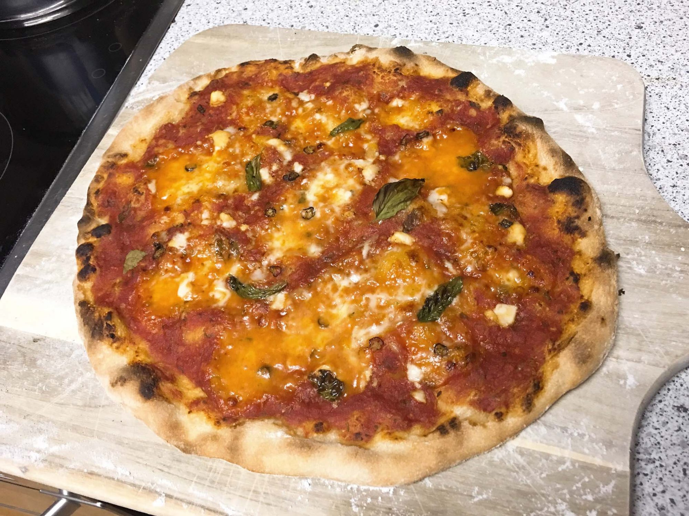
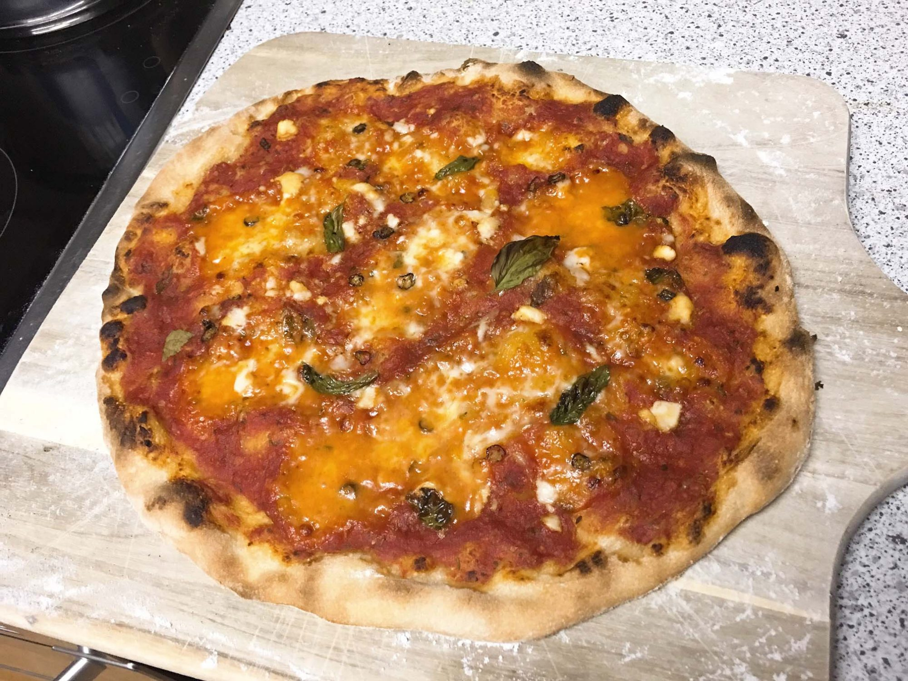
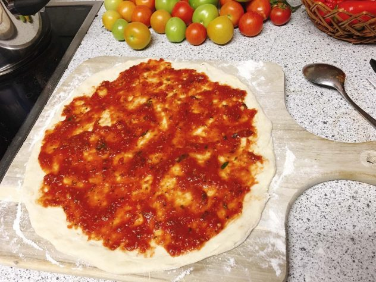

1 hour
10 mins
1 hour 10mins
- 1/2 cup warm water
- 1/2 teaspoon yeast
- 1/2 tablespoon sugar
- 2 tablespoon olive oil
- 4 cups flour
- 1 tsp dried basil
- Freshly cracked black pepper
- 1/2 teaspoon sea salt
- 70 g Mozzarella
- Tomato sauce
- A few basil leaves
- olive oil
- Parmigiano Reggiano
Add the warm water, yeast, and sugar to a large bowl. Add the olive oil,flour and salt. Mix with a spatula until a thick dough has formed. Transfer the dough to a floured surface and knead with your hands until a smooth and slightly sticky dough has formed, about 5 minutes. Shape the dough into a ball, put back into the bowl and cover with a heavy towel. Let rise in a warm place for 60 minutes. Then follow the instructions below for fermenting.
1
Shape the pizza dough with your hands into a thin round pizza.Coat the pizza with the tomato sauce.
Leave about 1 inch on the pizza rim.
2
Cut the mozzarella into thin slices and spread on the pizza. If you like it more aromatic, just add some Parmigiano Reggiano.
3
Drizzle with some olive oil.For some basil leaves on the Pizza Margherita.
For a more intense basil taste add the basil after baking the pizza.
4
Pizza Margherita needs about 4 to 5 minutes at 300 degrees Celsius with a pizza stone. At 250 degrees without pizza stone, however, it takes about 10 minutes.